OracleonNutanix(SETraining)
AlbertChen
APACSystemSpecialistEngineerBusinessCriticalApps
SolutionArchitect

2
Albert Chen / Nutanix APJ System Specialist -BCA
§ Certification
• ITILv2;HPUXSystemAdministrator;OracleOCP;
VMwareVCP3, 4,5;EMCTechnologyArchitectExpert;
EMCCACloudArchitectSpecialist,NutanixNPP
Certification,TTTCertification
§ Experience
• NutanixAPJSr.SystemEngineer2014 ~ Now
• VMwareGlobalCOE–Sr.SolutionArchitect2011
• EMCsolutionCenterPrincipleSolutionEngineer2004
• HPService–SoftwareEngineer2001
• SystexTechnicalEngineer1997
3
What are Business Critical Applications
Any application that could have a material impact on your or your
customers organizations' reputation, productivity or financial
viability if it were to become unavailable or experience severe
performance degradation for an extended period of time
Examples:
§ ERP systems and supporting databases and middleware
§ Manufacturing, Process Automation and Control Systems – SCADA
§ Financial systems, payment processing, online banking
§ Middleware and ESB systems
§ Billing systems
§ Customer facing online systems
§ What else?

4
• Generally
– Hardware or software refresh
– Uptime and compliance issues
– Mergers or rapid business transformation
• Exchange
– Exchange 2010 upgrade cycle (no in-place upgrade
from either 2003 or 2007)
– Issues with DAG or clustering
• SQL
– SQL version upgrade (e.g. 2005, 2008, 2012)
– Changing Microsoft licensing from Enterprise to
Datacenter
• SharePoint
– SharePoint version upgrade (e.g. 2007 to 2010)
– Migration from other collaboration
platforms/applications
• Oracle
– Creating cost-effective development and testing environments
quickly
– Underutilized Oracle database servers that need consolidation
• SAP
– New SAP install
– SAP upgrade cycle
– Migration to 64-bit NetWeaver
– New SAP modules (e.g. CRM, BW, SCM)
• Unix Migration
– Cost-cutting or end of mainframe lease
– Changing database platform (e.g. DB2 to Oracle)
• Java
– Scalability issues (e.g. parallelism or data latency)
– Application downtime due to frequent software and system
upgrades
When to Virtualize that App?

5
BusinessCriticalApplicationHighAvailability
• ProtectonCPU/Memory–
• ServersClustering–Protectonservicelevel
• HypervisorClustering–ProtectonVMlevel
• ProtectonStorage–
• DualController/DualFans/DualPDU
• RAID1/5/6
• HighAvailabilityalwaysmentionedRTO,RTOdecideyourdesign
• ApplicationLevel–ex:OracleRAC(RTO<fewseconds)
• OSLevel–ex:VeritasCluster(RTO<13minutes)
• HypervisorLevel–ex:vSphere,AHV(RTO<35minutes)

6
FieldPresales“asks”onOracledatabase
• CustomerrequiredsizingOraclefortheirenvironment,buthow?
• HaveaPOCrelatedtoOracledatabase,butdon’tknowwhatkindof
modelNutanixcanfitin?
• HowmanyOracledatabasesinonenodewillbethebestconsolidation
rate?
• HowrunningabestpracticedesignedOracledatabaseonNutanix?
• Whatkindoftoolsforperformancetesting?
• POCtestingstep&Scenarios?

7
Oracle101
• WearenottrainingeveryoneasaOracleDBA.Wejustgive
youideaaboutwhatthedatabasedoing,andwhatweneed
toknowrelatedtoNutanix
• Ifyouwantknowmore,youcanjointheirofficialtrainingor
moreselfstudy

8
Instance
OracleBasicInfrastructure
Storagestructures
Memorystructures
Processstructures
SystemGlobalArea(SGA)
Backgroundprocesses
Databasefiles
ClientProcesses
BufferCache
Share_
Pool
Data
Dirctionary
Large
Pool

9
OracleInstance/Database
• Instance
- SGA+BGProcesses
- SGA
Buffercache–Likeour“OPLOG”and“ContentCache”forwrite/readcacheusage
SharePool–SQLhashstore
DataDictionary–SystemObjectcache–like“MetaDataCache”forafilesystem
LargePool–forexport/import,backup…
- PGA:Processesworkingspace
• Database
- Agroupoffiles,WhererelatedtoIO
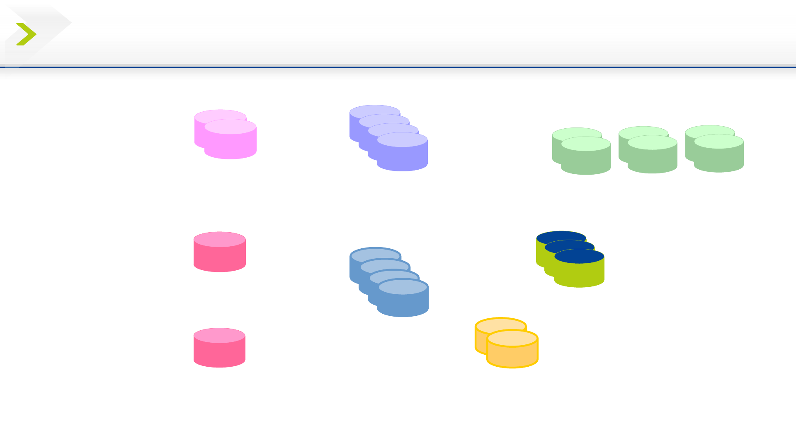
10
Whatkindofdatafiles?andfunctions
•Onlineredologfiles
•Passwordfile
•Parameterfile
•Archivelogfiles
Controlfiles
•Datafiles
•Alertandtracelogfiles
•Tempfiles
Group1
Group2
Group3

11
OracleFiles
• ControlfilesLogallOracleStructure(Howmanydatafiles,locations..)sometime
forbackupcataloguse
• Datafiles–Wherethetables,indexesinside
• Redolog–Wherelogalltheinsert,update,deletetransactionrecord
• Archivelog–Whenenabledarchivemode,willstartgenerate.Oldredologcopy
• Parameterfileplaintextorbinfiles(bydefaultafter9i),keepallparameter(ex:
SGAsize,Parallel..)
• TempfileWhensortingorjoinSQLstatementwillsave
• Alert/Tracelog–systemlog,findproblemuse

12
WhatrelatedtoNutanixIO?
• ControlfilesAlwaysreadwhenstartdatabase,writewhenbackup.Whendesign
wecanignorethelocationofthis.
• Datafile–
- Traditionalway,wewillaskseparatetablesandindexestablespacesintotwoLUNs.Best
practicenowusingASM.Willintroducelater
- OLTPalwaysrandomread/write,IOsizeusually8kbutcanchangeafter9i
• Redolog–Alwayssequencewritenoanyread.Butwhenenablearchivelog,will
startsequenceread.
• Archivelog–Alwayssequencewrite,Whenrecoverdatabase,startsequenceread
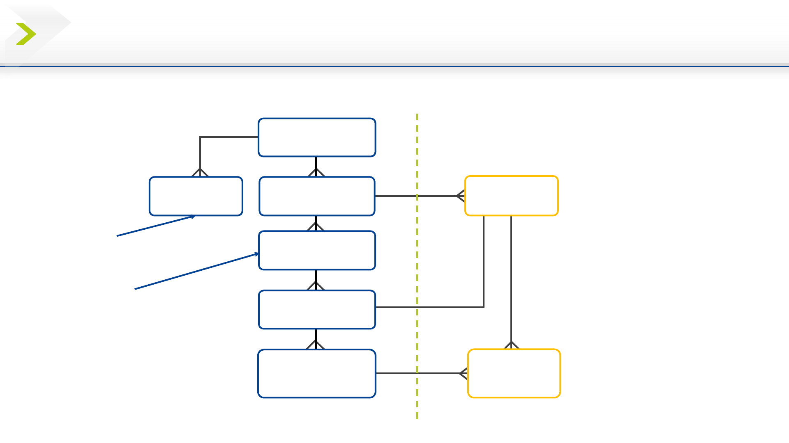
13
Logicalvs.PhysicalviewinOracle
Database
Logical Physical
Tablespace
Datafile
OSblock
Segment
Extent
Oracledata
block
Schema
RealFiles
8,16,32K
YoucanthinkSchemaisauser
Thinkisasatable/Indexusedspace
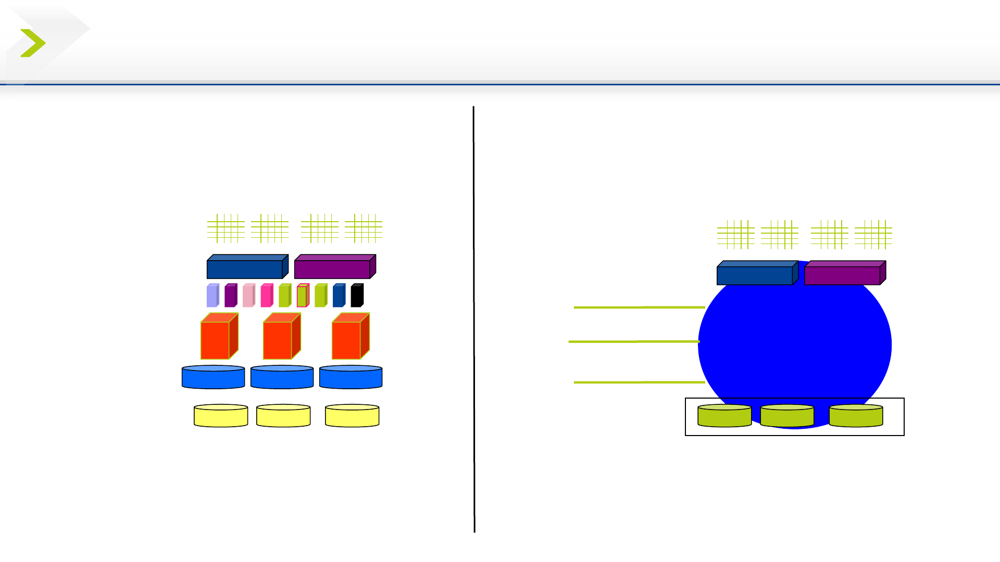
14
Oracle
ASM
TheOperationalStack
Disks
LogicalVol
FileSystem
00100010001000100010
00100010001000100010
Files
Tablespace
Tables
DiskGroup
LogicalVol
FileSystem
Files
Tablespace
Tables
OLDUNIXOracleDB
ASM

15
ASMBenefits
• What’sASM
• SpecialOracledatabaseinstance–StillaOracledatabase…..(YoucanthinklikeCVM)
• LikeVxVMvolumemanager
• Benefit
• Simplifiedmanagementinterfaceforstorageresources
• EliminatesmanualI/Operformancetuningtasks
• Virtualizesthestoragetoasetofdiskgroups
• Providesmainframeclassperformanceatlowercost
• What’sthedifferentcompareASMwithVxVM/LVM?
• KeyisASMwillloadbalanceontablespacelevel,VxVMorLVMnotjustPE(PhysicalExtent)level

16
OracleBackup/Restore

17
BackupMethod
• PhysicalDataProtection
• Coldbackup–shutdownalldatabase,copyallfilestootherlocation(impossibletocustomer)
• Export/ImportorDataPump–Justbackuppointintimedata
• HotBackup–UsingRMANbackuputilitytoTapeorDisk(Mostofuserwillusethisasabackup
methodofOracle)
• VMwareVADP(VMwarevStorageAPIforDataProtection)
• LogicalDataProtection
• Flashback–CanprotectinTransaction/Table/Wholedatabaselevel
• Needtoassign“FastRecoverArea”
• Likesnapshot…recovertopointintimewhendodatabaselevelrecover

18
RMANBackup
• RMAN–
- UsuallyusingcontrolfileoracatalogDBasabackupmetadb(oryoucanthinkitasIndex).
- Supportalldatabasebackup,incrementalbackup(Blockchangetrace)
- MostofthirdpartybackupsoftwarecallRMANscripttobackupOracleDB(Backupagent
issuescripts)
– ALLOCATECHANNELch00TYPE'SBT_TAPE’;
- Clonedatabaseonlinefordeveloporfordataguard

19
OracleDatabaseTraditionalInfrastructureLayout
OracleRACLUN
1TBx12
OracleRAC
VMDK
500GBX24
ESXiDatastore
1TBX12
OracleASMDG1
1TB
(redolog,temp
tablespace,controlfiles)
OracleArchiveLogDest
500GBperVM
OracleASMDG2
500GBx20=10TB
(tabledatafiles,index
datafiles)
YoustillneedtodecideLUNsRAIDType,ZoningandMasking
KeyQuestiontocustomer–
HowmanyLUN/Datastorenow
youneedtomaintain?
Imageonedatabasewith10LUNsyou
have10database,youneedmaintain
100LUN,40Zoning,100masking
Ifdatabaserunoutspace,addextra
storageforspace…Complicate,Risk....

20
OracleDatabaseNutanixLayout–OurKeyBenefit
Container
OracleRAC
VMDK
500GBX24
Datastore
OracleASMDG1
1TB
(redolog,temp
tablespace,controlfiles)
OracleASMDG2
OracleASMDG3
500GBx20=10TB
(tabledatafiles,index
datafiles)
Noneedtodesign
KeyAnswertocustomers–
• Reducemaintaineffort
• Easytoextendspacewithoutdesign
andrisk
• AutomaticLoadbalanced

21
OracleRAC
ESXiHost1
ESXiHost2
VM
Oracle
RAC1
VM
Oracle
RAC2
Oracle
VMDK
(Shared)
EnableMultiwriter
• DesignKeyNote
• MultiWritermustenabled(ESXi)
• ThickEagerZeroformatforVMDK(ESXi)
• Interconnectenablejumboframe
• Interconnectusingvlan
• LeverageDRSaffinityrules
• AlwaysdesignasN+1
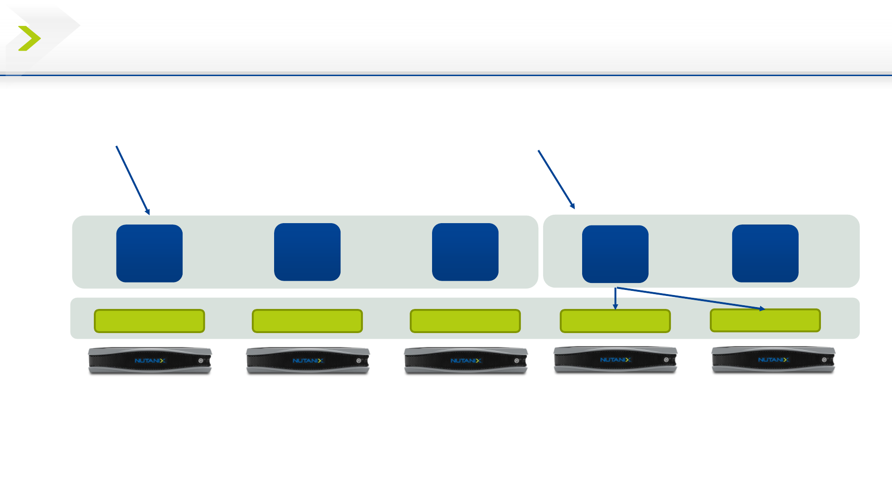
22
YourRTOdecideyourdesign
NX8235G4
NX3360G4
ESXi/AHV ESXi/AHV ESXi/AHV ESXi/AHV
ESXi/AHV
VM
RAC1
VM
RAC2
VM
Oracle
VM
Oracle
VM
Oracle
Tier1Oracledatabase
Tier2/3Oracledatabase
OralceStandardEdition
RTO310minitus
OralceEnterpriseEditionwithRAC
RTO<1minutes
OracleRAC1&RAC2usingESXiDRS
AffinitylockinNX8235G4
Hypervisor
Tier2/3OracleusingESXiDRS
AffinitylockinNX3360G4
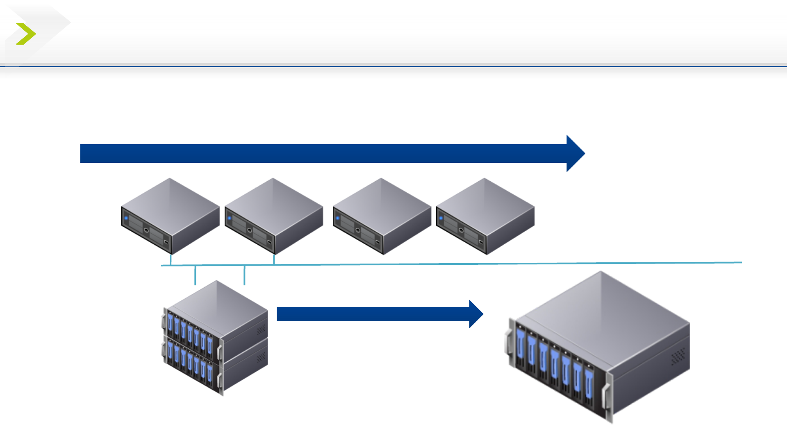
23
TraditionalITScalingMethod
100KIOPS
Performance
BusinessincreaseRequiredmoreservers
TheIOPSwillbecome200K?
DataMigration/Risk

24
NutanixScalingMethod
NDFS NDFS
VM
Oracle
vMotionwithoutdowntime
Nodatamigration
Norisks!!
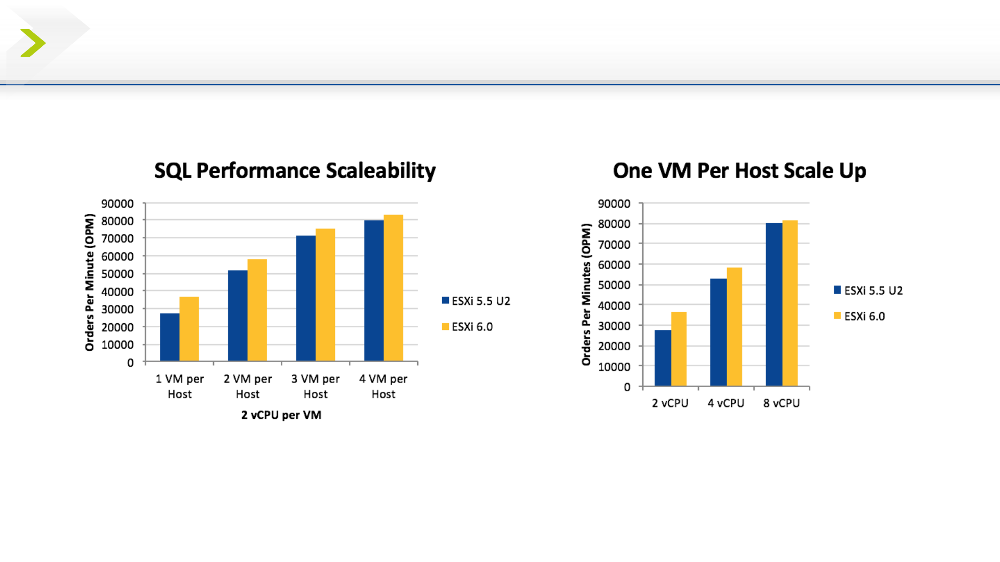
25
DatabasePerformanceonNutanix
25

26
DatabasePerformanceonNutanix
26

27
NutanixABSScalesasyourBusinessGrows
CVM
CVM
CVM
New Node
CVM
Applicationneed90KIOPS
Whenbusinessgrowth–
Applicationneed120KIOPS

28
OracleLinux/OracleVMsupportNutanixABS

29
What’sthedifferentfromtraditionaliSCSIstorage
TraditionaliSCSI
• Providelimitedstoragecontroller
usuallyistwo
• Needconfiguremultiplepathand
assigncontrollers’ports
• TraditionalRAID–Whendisk
failedrebuildslow
• AddmoreLUNs,youneed
manualassignwhichcontrolleras
primaryandwhichissecondary
NutanixABS
• Provideunlimitedscaleoutstorage
controller(Performancecanscaleout)
• SingleDataServiceIP,donotneedto
assigntoeachcontrolleriSCSItargetport
• Distributedatatoothernodesprovide
RF=2,3protection.Ifnodefailed,westill
haveonecopyontheothernode
• Addmorevdisk,automaticloadbalance
inthebackend
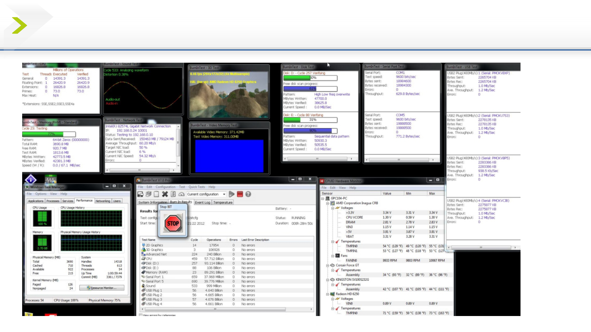
30
HowtoperformaefficiencyPOC

31
What’sthesuccessfulcriteriaforanOraclePOC
• EngageProcesses–
• What’sthecustomer’sexpectation?Ex:Ineedachieve4000TPS
• Testingobjectives(HA,Functional,orPerformance)?
• HowlongforthisPOC?POCisnotQC.
• DowehaveabaselinecomparewiththisPOC?Comparewitholdsystemorsome
standardtestingtool?
• Whatweneedavoid–
• Usingwrongtestingtools–Ex:Storagevendersprovidedscript,singleSQLstatement,
batchjobexecutetime
• AskingforDataremodeling(Tablerepartition),DBA&Developersjobs
• AskingforSQLstatementreenforcement(RewriteSQL),DBA&Developersjobs
• Tables/Index/StoreProcedure..Storageobjectreconfigure

32
What’sthesuccessfulcriteriaforanOraclePOC
• Whatweneedprepared?
- Schedule,milestone,ownership
- Leverageapplications’venderssupport–Engageyourresources.Wecan’tdoeverything
- Correctsizing–ChoosetherightmodelforPOC.(Keyitem)
- Choosingrighttestingtools–Fair,QuicksetupPOCenvironment
- KeepPOCsimple–MostofdatabasePOCiscomplex,ifweinvolvetoomanydatabase
internalobjectlikeTables/Index/Procedure,SQLstatement…Wewillmakethingscomplex
- OLTP&OLAPtestingconfigurationaredifferent.Pleaseaskcustomerwhatkindoftesting
theywant
- Getthecurrentsysteminformationaspossible.Ex:OracleyouneedgetAWRreportif
possible.

33
WhatOracle/SQL/Mysqlperformancetoolsweuse?
• NutanixprovideXRayforOLTP&OLAPtesting–Wetalklater
• Oracle–
• BenchmarkFactoryhttp://software.dell.com/products/benchmarkfactory/need$$$
• **Swingbenchhttp://dominicgiles.com/swingbench.html(no$$$)
• HammerDB
• SQLServer
• BenchmarkFactory
• HammerDB
• SQLIO,Dskspeed(I/Oonly)
• MySQLServer
• Sysbench
• HammerDB
• BenchmarkFactory
34
X-Ray 2.0
• MusthaveNutanixloginaccount
• Downloadfromthe“Tools&Firmware
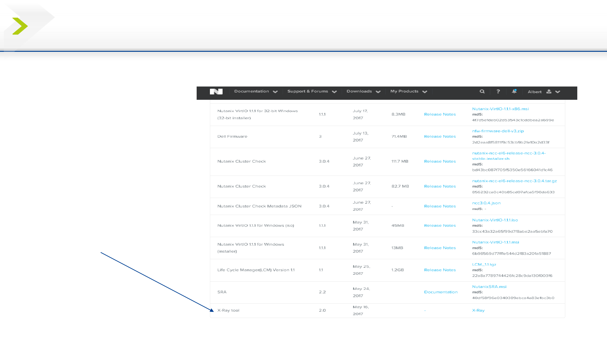
35
How to download X-Ray source
DownloadHere
Ifyoucan’tdownload,
pleaseaskfromyourregionchannelSE

36
Create X-Ray VM
ActuallyXRayisaovaorqcowfile
Youcanuseimageserviceuploadtoyour
Cluster.
Afterupload,youcancreateaXRayVM
Note:
RecommendinstallthisVM
outsidethetestingcluster

38
Choose Hybrid/ All Flash Scenario
Whenchoosescenario,
Pleaseselecttheright
Testingmodel–Hybridor
Allflash
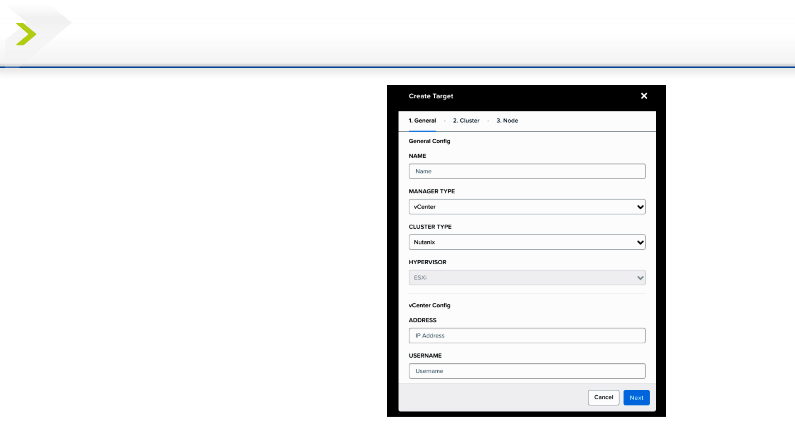
39
Add Target
IntheCreateTarget,meansaddatestingclusterinXRay
Choosethetypeofmanager,andclustertype.Givetheright
Informationasrequired
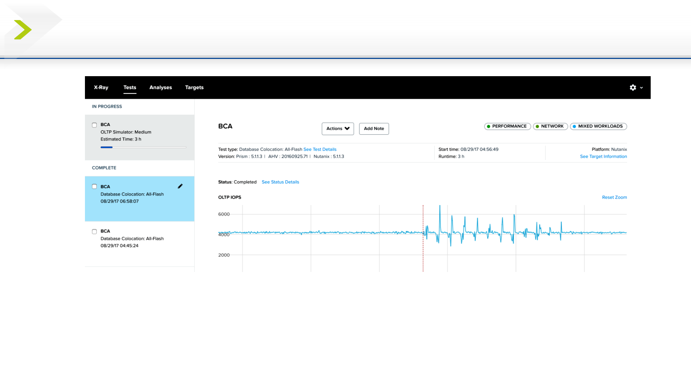
40
Result Analysis
AfterrunningXRay,itwillgivearesultanalysisandalsoshowyoutheperformanceresult

41
Result Analysis
Youcanexporttestingresultasazip
Orcreateareportforreading
42
OracleSizingandDesign

43
Correctsizingisveryimportant
DBAs
InfrastructureTeamMembers
Whenyousizingwronginthebeginning
Thenyouneedalltheexpertshelpyou
ButwemaynotrescueyoubecauseIt’s
Overload!!!
Customers
Physicalnodes
CustomerDatabase
44
CurrentStatusofOracleSizing
• WehaveSizeronNutanixwebsite–It’sthestandardof
Nutanixsizingmethodology
• https://services.nutanix.com
• SizerhadalreadycoveredmostofapplicationsbutnotOracle
database
• WeleverageSizer“Raw”inputmethodforsizingOracle
database
• InthefuturewillbehaveOraclesizingscenario
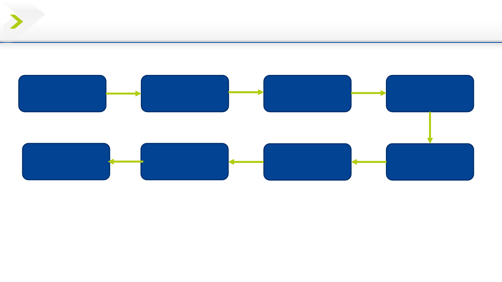
45
OracleSizingProcess
Collectperformance
datafromcustomer
site
AnalysisPerformance
WeatherReport
CPUConversion
MemoryCalculation/
IOPS/WSS
Assumption
SizerRAWdataInput
ConsideringHA/CPU
core/SDD
Conservative
ReportGeneration
PushBOMtoSFDC
VMlayoutonnodes


47
Collectperformancedatafromcustomersite
Step1
• RequestthecustomertoruntheAWRCaptureSQLtocapturethedata.Runthese
onallDatabasesinscopeforsizing(atleastProductiondatabases).Scriptis
herecapture_awr_stats.sql
Step2
• Uploadtheoutputfileineitherawrhist*.outformatorazipfileformat(incaseof
multiplefiles).Sample.outfilecanbefoundhereawr-hist-2505896440-PPTL1-
7424-7627.out (Corp VPN is needed)
Step3-NutanixSE
• OnceyouuploadthefiletheparserwillparsetheoutputandgenerateaPDF
outputwhichyoucanuseforsizing.ItalsogeneratesanOverallSummary.csvin
caseyouareparsingmultipleoutputfilesatonce.SamplePDFhereAEBPD01-
40055-40852-1-plot.pdf

48
CollectionStep1
IfcustomerDBAcanhelpyoutocollectthatwillbegood,butif
customerdon’tknowhow,Pleasefollowthissteptocollect
data
1. Loginassysdbaordbaprivilege
• Loginoracleuser,inthecommandprompttype=>sqlplus/assysdbaorsqlplus
system/PASSWORD@SID
• sqlplus>@capture_awr_stats.sql(willrequireDiagnosticPacklics)askfor
customerdotheyhavethis.
• Inthesamefolder,willhaveoneoutoutlike“awrhist1423744458ORCL0
155.out”,where14237xxxxisDBID,ORCLisoracleinstance
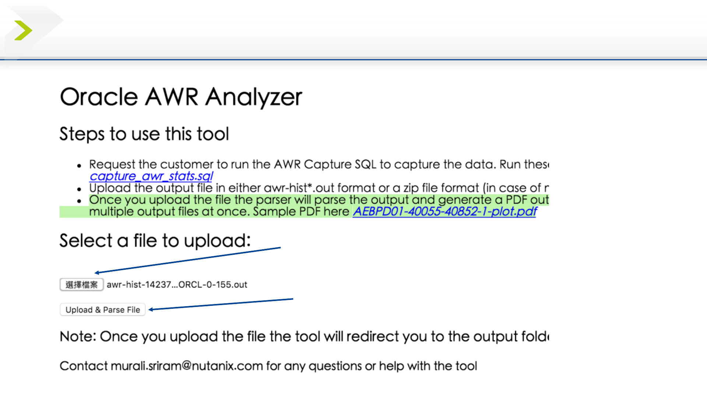
49
Collection–Step2
Selectfilesanduploadawrhistxxx.outfile
Clickupload&parse

50
Collection–Step3
DownloadthePDFfile

51
AnalysisPerformanceWeatherReport(Section1)

52
AnalysisPerformanceWeatherReport(Section1)
Keymessages
• Node6meansOracleRACdatabase
• Platform–Linux
• Version11.2.0.3(patchesupdate3)
• Socket/coretotal12sockets/96cores,meansonenodewith16core(Wejust
watchingcorenumbers)
• Threads192means–Hyperthreadsenabled
• Memory256GBpernode–Totalmemoryofthismachineuse(notSGA)
• Daysshown28.8days–totalcollectAWRtimeis28.8days

53
AnalysisPerformanceWeatherReport(Section1)
Keymessages
• CPUMaximum98.1/Averageis41.5(Section2cansee)
• SGA+PGA=258+51=309GB,51pernode
• Databasesize=13624GB

54
AnalysisPerformanceWeatherReport(Section2)

55
AnalysisPerformanceWeatherReport(Section2)
Keymessages
• Rednumberforaveragevalues–CPU41.5average,ReadIOPS47782,WriteIOPS
4999.6
• Read/WriteRatio–47782/4999.6=9.5:1(OLAPdatabasepossible,butweneed
section3asaevidence)
• MaximumReadIOPS=89571,MaximumWriteIOPS=7872(Wewillbaseonit
whenwesizing)
•
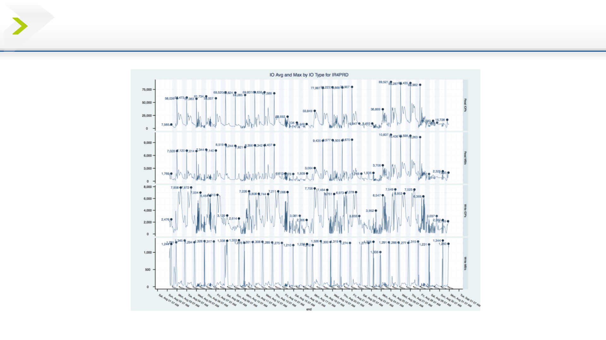
56
AnalysisPerformanceWeatherReport(Section3)

57
AnalysisPerformanceWeatherReport(Section3)
Keymessages
• Watchdailyoperationbehavior
• WriteisregularlythroughMondaytoFriday,andduringtheworkinghours
• Readispeakatnight,andhappendailyeveninSaturdayandSunday
• ThisdatabasecouldbeaOLTPandinnightwillbeaOLAPbehavior

58
CPUConversion
Scenario–
• CustomerI
– AlreadyuseX86serversbutstillinphysical
– AlreadyuseX86servers&virtualization
– WeuseSPEC2006
• CustomerII
– UsingoldUNIXserver,andwantconvertintovirtualization
– WeuseSAPs
– Reasonis,youcan’taskusertobuyaoldmachinetocompareUnixCPUtoIntelCPUhead
tohead.Wejustusethe3
rd
partydatatocalculate
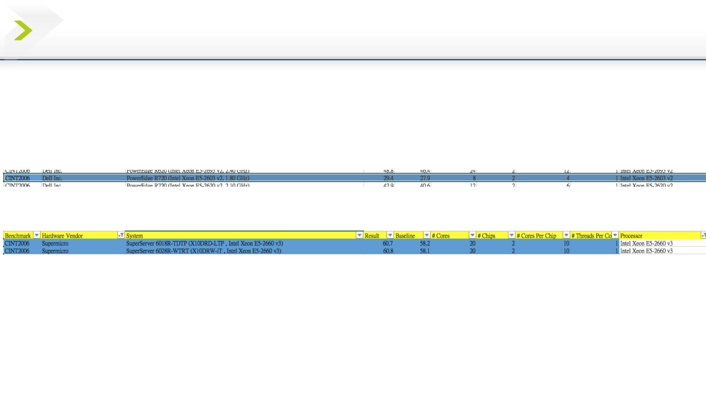
60
CustomerI–UsingSPECCPU2006
Example:
• ForthisOracleRACcustomerusingDellPowerEdgeR720IntelXeonE52603v21.8GHzCPU.The
Resultis29.4forsingletaskCPUperformance
•
• ForNX8035G4,wepickSuperMicrowithsameCPUtype.IntelXeonE52660v3,TheResultis60.7
or60.8forsingletaskCPUperformance
• Sotherelativecomparisonwillbe60.8/29.4=2.06.ItmeansE52660v3almosttwicespeedsofE5
2603v2.
• Ifcustomerconvertfromphysicaltovirtual,therewillbeaoverheadforhypervisor.Wealways
assumeas10%ofthisconversionlost.Itmeans2.06X0.9=1.86.

62
Example:
• CustomeruseOracle10grunningonsolarisSPARC,UltraSPARCT2Pluswith32cores.TotalSAPSis
25830.Thenwecancalculatepercoreis25830/32=807SAPs.
• NowCustomerwantrunningonNX8150E52697v2CPU,theaverageSAPsis53702.EveryE52697
v2CPUhave24core,percoresapis53702/24=2237
•
• DuetoVirtualizationwillhaveoverheadtoCPU,2237x0.9=2013.
• ThewecanassumeoneIntelE52697CPUequaltoUltraSPARC=2.49:1
CustomerII–UsingSAPsascalculation

63
Assumption
• Assumption
• ThismaynotgiveyouapreciselynumberoftheCPUconversionvalue.Butcan
giveyouarelativevaluebetweenthoseCPUmodel.
• WhenusingSAPstocalculate,weignorethebackenddatabasetype.
• AlltheSAPstestingisusing99%ofCPUutilization,Customer’sactual
utilizationwon’tnotsohigh.Ifwecangetcustomers’currentCPUutilization
calculation,thecalculationwillmoreprecisely.
• IfSAPscan’tfindaCPUtypelikeE52697v2,wecanpickoldonelikeE52660
v2andusingSPEC2006togetrelativecomparisonvalue
• **NotallCPUmodelcanbefoundinbothSPEC2006andSAPwebsite.Ifyou
can’tfindoneexactly.Choosethemostsimilarone

64
WSSCalculationorAssumptionRules
• Calculation–
– Choosethemaximumdeltasetx3asaWSS
• Assumption
– ForOLTPworkloads(<5TB)assume50%oftheDBsizeasworkingsetandincreaseto100%
dependingonhowbusythedatabaseis
– ForDWworkloads(>5TBSize)assume20%workingsetandincreasethenumberbasedon
customerdiscovery
65
IOPSCalculation
• UsingtheMaximumIOPSwecollectfromourscript(obsolete)
• WSS(WorkingSetSize)isthemostimportantinformationweneedtoget,but
inourscriptwecan’tgetthis
• WSSwilldecidetheSSDsizeinyourNutanixmodel
• InsomestoragelikeEMCVNX,VMAXcantrackingdeltablockchanged
• Ex:VNX–ReservedLUNPoolsusage
• ***WeassumedWSSforOLTPis30%ofalldatabase

66
Oursizingexample
• CPUcoretotal=96
• AssumeuseruseoldE52603andweconverttoE52660v2
• TotalIOPS=ReadIO(Max)+WriteIO(Max)
• 89571+7872=97443IOPS
• Totalcapacity1.3TBdatabaseusage(NotincludeVMGuestOSusage).
• TotalRAM=1151GBbyguesthosts,SGA+PGA=309GB
• WeassumetheOLTPWSSis30%,So13TBdatabasedata,wehave3.9TB
WWS.Actuallycolddatawillbe133.9=9.1TB

67
LogintoNutanixSizerandusingRAWasWorkloadType
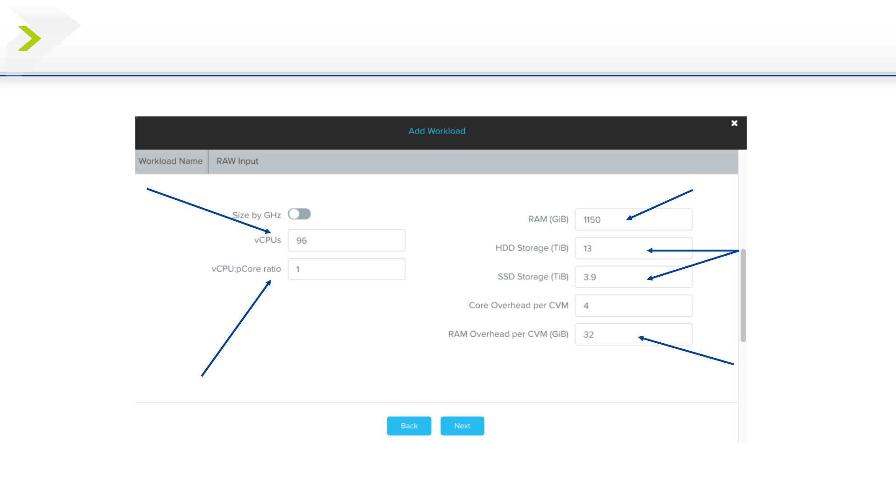
68
InputScenarioaswecollect
FromAWRanalysis
FromE52603toE52660v2
Shouldbeshrinkinourcase
Hot+ColdData
Recommendfordatabase
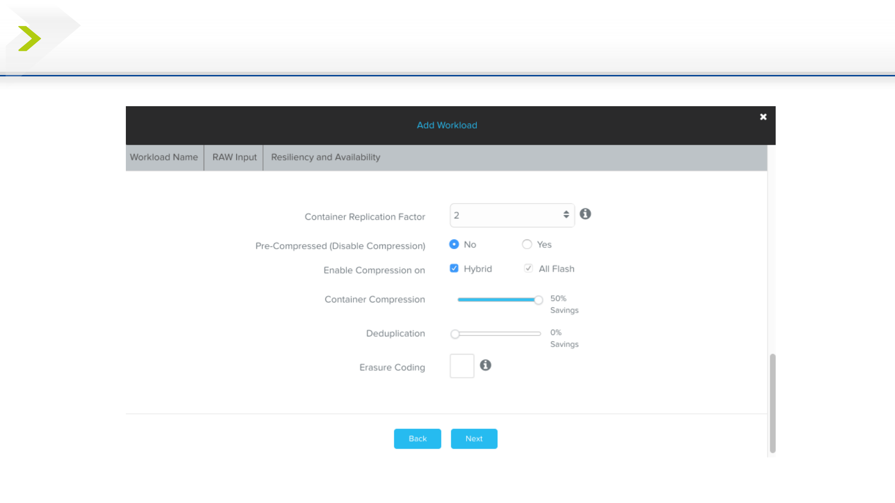
69
ChoosingRF,ErasureCoding

70
Createadedicatedclusterfortheworkload
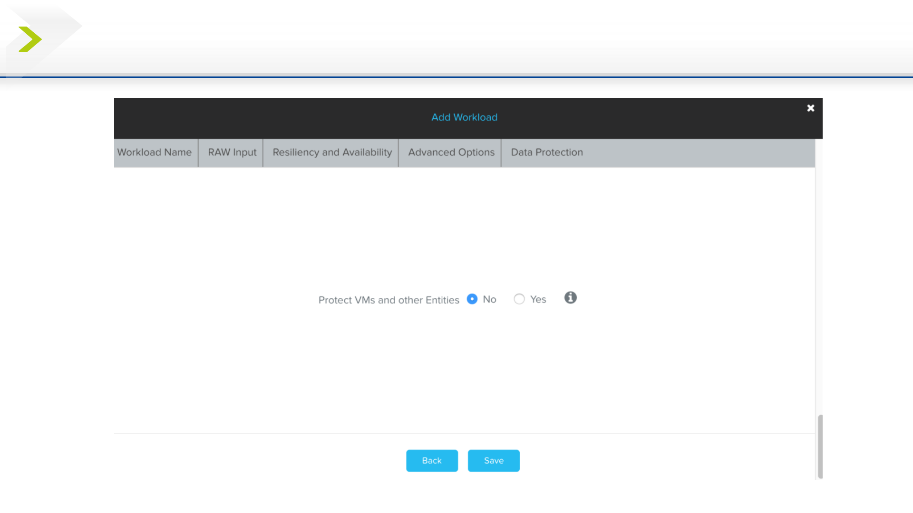
71
Noprotectionconfigureinthiscase
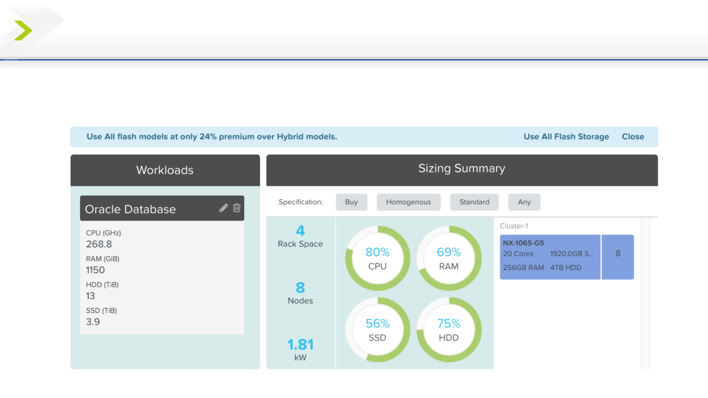
72
Configuration1–Automatic
TCOcostsaving–71%

73
Configuration2Manual
TCOcostsaving–72%

74
Configuration3NX8035G5
TCOcostsaving–72%

75
Whichconfigurationisthebestone?
• FromROI/TCOperspective
• Configuration2&3savemoremoney
• FromHAperspective–
• Configuration1&2whenoneofthenodefailed,canprovidebetterresource
• Spendmoremoneyonlicensefee
• FromPerformanceperspective
• Configuration3providebestperformance(NUMAandlargeSSDspacetohold
moreWSS)
• ForAutomaticConfigurationisnotrecommendtouseinthis
scenario,weneedtobacktochecktheCPUconversionratio

76
BestPracticeforBusinessCriticalApplicationImportant
NutanixLayer
HypervisorLayer
GuestOSLayer
ApplicationLayer
WhenimplementBestPracticeforapplication
***Weneedtocheckalllayerconfiguration&
Parameterfollowbestpractice
Responsetime
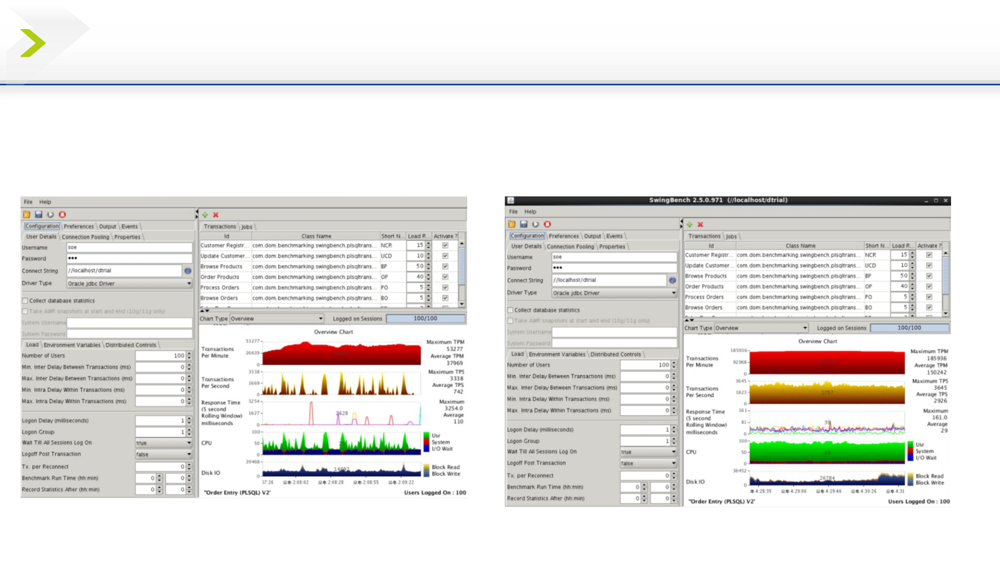
77
Read the Best Practice then applied
BeforeBestPracticeApply AfterBestPracticeApply
Insamenode,Before&After

78
Design your critical database like “Partition”
2Socketwith40cores
192GBRAM
CVM
4cores/16GB
App1
8cores/32GB
App2
8cores/32GB
App3
16cores/96GB
App4
4cores/16GB
DedicateCPUcore/MemoryforT1Database
Dev/Testingcanbeovercommit
PhysicalMachine
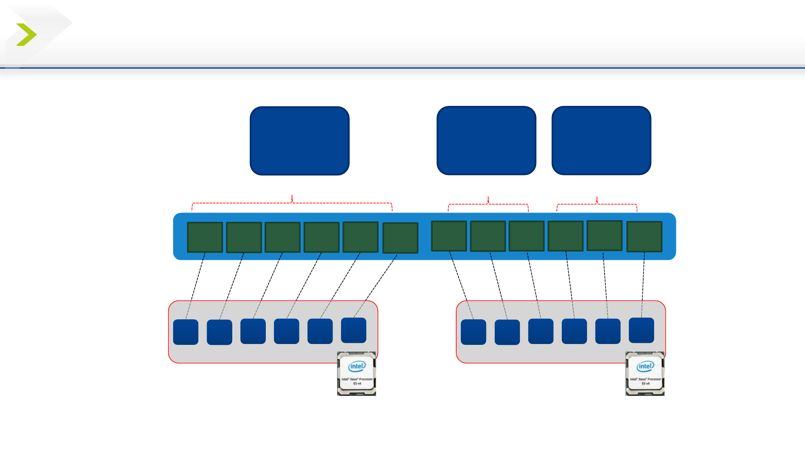
79
VM1
ORACLE
CPUNUMAAlignementdesigninHypervisor
NutanixNode–2sockets,12physicalcores
vCPU-6
vCPU-3
VM2
ORACLE
VM3
ORACLE
vCPU-3
vCPU
vCPU
vCPU
vCPU
vCPU
vCPU
vCPU
vCPU
vCPU
vCPU
vCPU
vCPU
1
Socket1(6cores)
C
C
C
C C
C
1
Socket2(6cores)
C
C
C
C C
C
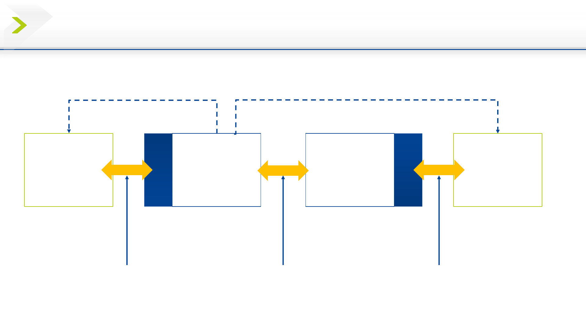
80
CPUNUMARemoteAccess
Memory CPU CPU Memory
MemoryCtrl
MemoryCtrl
Interconnect MemoryChannelMemoryChannel
LocalAccess RemoteAccess

81
CPU/NUMABestPractices
• AvoidRemoteNUMAaccess
• Size#ofvCPUstobe<=the#ofcoresonaNUMAnode(processorsocket)
• AlwayskeepHyperthreadson
• Initialconservativesizing:setvCPUsto#ofcores
• HTbenefitaround2025%insomescenarios
• IncreasevCPUstogetHTbenefit,butconsider“numa.vcpu.preferHT”option–
individualcasebasis
• DisableHotAddCPU
• AlignmentVMsvCPUwithinphysicalNUMAboundariesifpossible

82
MemorySizing
PGA
(Client sessions and context)
Oracle SGA
(DB buffer cache, and others)
Operating System
VMConfiguredMemory
• WhenwerunOracledatabaseinvirtualizationenvironment,weneedrightsizingofthoseVM
andreservedRAMforOracleDB
• SGA+PGA+BackgroundProcess+OS=ThatisreservationRAMsize
• Keep1:1rulesforOracle/SQLdatabase
Reservation
VM

83
SGA/PGAsizeforanewproject
OLTP DSS(OLAP)
SGA_TARGET=(total_mem*0.8)*0.8,where
total_memisthetotalamountofphysical
memoryavailableonthesystem
SGA_TARGET=(total_mem*0.8)*0.5,where
total_memisthetotalamountofphysical
memoryavailableonthesystem
PGA_AGGREGATE_TARGET=(total_mem*0.8)
*0.2,wheretotal_memisthetotalamountof
physicalmemoryavailableonthesystem
PGA_AGGREGATE_TARGET=(total_mem*0.8)
*0.5,wheretotal_memisthetotalamountof
physicalmemoryavailableonthesystem

84
MemorySizingfromtheAWRreport–ExistSystem

85
Running AWR report
SQLPLUS> @?/rdbms/admin/awrrpt.sql

86
VirtualMemoryBestPractices
• ESXiMemoryManagementMechanisms
• PageSharing,Ballooning,MemoryCompression,SwaptoHostCache,RegularHostLevelSwapping
• MemoryReservation(ESXiOnly)
• AHVnomemoryovercommit
• setmemoryreservation=allocatedmemory(avoidballooning/swapping)
• useactivememorycounterwithcautionandalwaysconfirmedusagebycheckingmemorycounterinPerfmon
• DonotdisableBalloondriver,TransparentPageSharing(TPS)
andMemoryCompression(ESXiOnly)
• VMwareToolsmustinstalledintheguestOS
• Ifpossible,buylargeRAMmodelofNutanixtokeeptheconsolidationratio
higher

87
ASMLayoutforESXi
VM
PVSCSI
PVSCSI
PVSCSI
PVSCSI
vDISK1 vDISK2
vDISK3
vDISK4
vDISK5
vDISK6
vDISK7
vDISK8
VMwarePVSCSI
DiskGroup1
(Datafiles)
DiskGroup2
(RedoLog)
DiskGroup3
(ArchiveLog)
NDFS

88
ASMLayoutforAHV
VM
vDISK1 vDISK2
vDISK3
vDISK4
vDISK5
vDISK6
vDISK7
vDISK8
Virtio
DiskGroup1
(Datafiles)
DiskGroup2
(RedoLog)
DiskGroup3
(ArchiveLog)
NDFS
VirtualSCSI
89
ThinorThickinvDisk?
• Wealwaysthinkthe“Thick”isbetterperformance?
• https://blogs.vmware.com/vsphere/2014/05/thickvsthindisksflash
arrays.html
• Notmuchinperformance
• OnlyneedwhenyouconfigureOracleRAC
• Butyouneedthink“SSD”isexpensivethan“HardDrive”
• Soyouneedsaveyour$$…thincansaveyourspace
• NutanixAHValwaysinthinmode
• Nutanixalsoprovidecompression,savemore!

90

91

92

93

94

95
OracleRAC–usingVMDKmultiwriterorusingABS
• WhenyouuseOracleRAConNutanix
• InESXi,youhavetwooptions.UsingVMware“multiwriter”parameterinyour
vDisk
• OrYoucanuseNutanixABSconfigure(iSCSIconnection)
• InAHV,youcanuseABS(Directconnection)or(iSCSIconnection)
• Whichoneperformanceisbetter?

96
OracleLayerBestPractice
• ConfigureOracleInitializationParameterParallel_Threads_per_CPU=1,and
DB_File_MultiBlock_Read_Count=128
• DisableOracleAMMAutomaticMemoryManagement
• SGA/PGAcorrectsizing
• UtilizemultipledisksforRedoLog,ArchiveLog,DatabaseTableSpaces
• UseOracleAutomaticStorageManagementifpossible,andsettheAUsize=1M
• EnableAutoExtendasafailsafeandsetnextsizetobeamultipleoftheASMAU
• ScalenumberofORADBVMsvs.largenumberofORADBinstancesandschemasperVM
• UseJumboFramesforOracleRACInterconnectNetworks
• UseVLAN’stoseparateOracleRACInterconnectTraffic

97
LinuxLayerBestPractice
• ReduceSwapping,usinghugepage,modifytheI/Oelevatorinthekernelbootparameter
• Go/etc/sysctl.confaddfewlineintheendofthisfile
• vm.overcommit_memory=1
• vm.dirty_background_ratio=5
• vm.dirty_ratio=15
• vm.dirty_expire_centisecs=500
• vm.dirty_writeback_centisecs=100
• vm.swappiness=0
• Aftermodifyalltheparameter,gocommandprompttype=>sysctl–p,rereadthesysctl.confand
takeeffective
• Alsofollowbestpracticeedit/etc/security/limit.conf
• NetworkingTuninginGuestOS(ESXionly)
• UsingESXiVMXNET3vNICandInstallVMwaretools
• Executecommand>/sbin/ethtoolGethXrx4096tx4096(Only)

98
HypervisorLayerBestPractice
• ClusterDesignusingN+1,nomatterESXiorAHV
• IfusepercentagevalueforHAadmissioncontrol=1/HostsperCluster(vSpherenoly)
• Ex:if4nodesincluster,setHAadmissioncontrol=25%
• KeeppCoretovCPU1:1forTier1,sometimescanbe1:2,dependsonyourdatabaseloading
• KeepNUMArule–KeepvCPUnumberseasilydivisiblebyNUMAnodesizesforeasyscheduling
• MemoryreservationfromHypervisorlevel(VMwareonly),AHVwillreserved
• VDSuseRouteBasedonPhysicalNICLoad,VSSRouteBasedonVirtualPortID(VMwareOnly)
• UsingPVSCSIandVMXNET3
• ESXiAdvanceparameter–
• NFS.ReceiveBufferSize=512
• NFS.SendBufferSize=512
• Net.TCPIPHeapMax=512
• UsingThickEagerZerodiskwhenOracleRACinconfiguration

99
Storage Best Practices
• Use multiple PVSCSI adapters to evenly distribute target devices
• Format database VMDK files as Eager Zeroed Thick for demanding
workload database
• Follow same guidelines as physical
– Separate vmdk with different IO characteristics i.e. datafile, log files, temporary
• Using Oracle ASM , otherwise make sure datafile size equally and load
balance them
• Disable Nutanix Shadow Clone Function
• Enable Container Level Compression
• Sizing Working set size correctly

100
UsingNutanixABSforOracleDB
• iSCSIparametermusttune
• node.session.cmds_max=2048
• node.session.queue_depth=1024
• node.session.iscsi.ImmediateData=Yes
• node.session.iscsi.FirstBurstLength=1048576
• node.session.iscsi.MaxBurstLength=16776192
• node.conn[0].iscsi.MaxRecvDataSegmentLength=1048576
• discovery.sendtargets.iscsi.MaxRecvDataSegmentLength=1048576

101
NetworkBestPractices
• SeparateinfrastructuretrafficfromVMtrafficforsecurityandisolation
• Using10Gb/sConnection
• Separatenetworkadaptersfor
– vMotion
– FTloggingtraffic
– ESXiconsoleaccessmanagement
– iSCSIusinginGuestiSCSI(SQL2008FCI)
• UseNICLoadbasedteamingfor(ESXionlyEnt+&VDS)
• UseVMXNET3Paravirtualizedadapterdriverstoincreaseperformance
(VMwaretoolsneeded)

102
NutanixLayerBestPractice
• UseasingleRF=2container
• KeepworkingsetinSSDanddatabasesizewithinnodecapacity
• ActiveWorkingSet=DatabaseBlocksReadPerDay+Database
BlocksChangedPerDay
• UtilizehighermemorynodemodelsforI/OheavyORADBworkloads
• KeepmostupdateNOSversion
• Alwaysturnoncompression(inlinecompression)
• Donotuseerasurecode,anddeduplication
104
Best Practice to Leverage
Oracle on Nutanix Papers
• Oracle Solution Brief
• Virtualizing Oracle with Web Scale Solution Note
• Oracle on Nutanix Best Practices Guide
• Oracle on AHV Best Practice Guide
Microsoft SQL Server on Nutanix Papers
• Microsoft SQL Server Solution Brief
• Virtualizing SQL Server on HCI Solution Note
• Microsoft SQL Server on Nutanix Best Practices
• Pleasecheckhere–
• http://www.nutanix.com/search/best+practice
105
MigrationOracletoNutanix

106
HypervisorSupportonNutanix–Oracle
Hypervisor GuestOSSupported Remarks/Notes
OnlyOracleLinux

107
DatabasemigrationScenario
• TypeI:UnixServertoNutanixPlatform(Oracle)
– RecreateOracledatabaseonNutanixPlatform
– Offline:DataPump
– NearOnline:OracleGoldenGate,DataGuard(OraclePlatformneedtocheck)
• TypeII:PhysicalX86toNutanixPlatform(Oracle,SQL)
– RecreateOracledatabaseonNutanixPlatform(Bestway)
– Offline:DataPump,VMwareConverter(NoneedrecreateVM),SQL Export/Import
– NearOnline:OracleGoldenGate,DataGuard(OraclePlatformneedtocheck) , SQL Mirroring
• TypeIII:ESXiX86toNutanixPlatformwith(Oracle/SQLonESXiServer)
– RecreateOracledatabaseonNutanixPlatform(Bestway)
– Offline:DataPump,NearOnline:OracleGoldenGate,DataGuard(OraclePlatformneedtocheck),StoragevMotion
• TypeIV:ESXiX86toNutanixPlatformwith(AcropolisHyperVisor)
– RecreateOracledatabaseonNutanixPlatform(Bestway)
– Offline:DataPump,NearOnline:OracleGoldenGate,DataGuard(OraclePlatformneedtocheck),StoragevMotion

108
OracleDRsolutiononNutanix

109
NutanixDRSolution(VMLevel)
DataCenterA
DataCenterB
ClusterA ClusterB
ESXiHost1
ESXiHost2
ESXiHost3
ESXiHost4
Oracle
VMDK
Oracle
VMDK
Replicated1hr/async
Primary Secondary
Cluster1
VM
Oracle
VM
Oracle
ProtectionGroup
Cluster2

110
NutanixDR(VMLevel)
• Requirements
- TwoNutanixClusterineachsite,networkconnected
- Networkspeedwillinfectthesynchronizationschedule
- TwovCenterServersinbothsite
• Advantage
- SimpleconfigurationusingNutanixPrismandprovideVMlevelprotection
- SeamlessintegratedwithvSphereEnvironment
- NoanyOracleskillinvolve
- Provideblocklevelchange/compress/encryptiontransmit
- SynchronizationisdonebyNutanix,notvSphere
- Disadvantage
- TheRPOistoolongfordatabasesolution(1hr)
- DRbootupsequenceneedbescriptorbySRMintegrated

111
NutanixDRSolution(VMLevel–SRM)
DataCenterA
DataCenterB
ClusterA ClusterB
ESXiHost1
ESXiHost2
ESXiHost3
ESXiHost4
Oracle
VMDK
Oracle
VMDK
Replicated15mins/async
Primary Secondary
Cluster1
VM
Oracle
VM
Oracle
vSphereReplication
Cluster2
SRM
SRM

112
NutanixDR(VMLevelSRM)
• Requirements
- Canbedifferentstoragesineachsite,networkconnected
- Networkspeedwillinfectthesynchronizationschedule
- TwovCenterServersinbothsite
• Advantage
- SeamlessintegratedwithvSphereEnvironment
- NoanyOracleskillinvolve
- Provideblocklevelchange/compress/encryptiontransmit
- TheRPOis(15minutes–minimumto1day),dependsonOracleSLAinTruecorp
- DRbootupsequenceintegratedbySRM
- SupportHeterogeneousStorageenvironment
- ProvideVMlevelprotectionifusingvSphereReplication
• Disadvantage
- SynchronizationisdonebyvSphere,notNutanix–meanstakeserver’sCPUcycle
- ComplexconfigurationinvSphereReplication(vSphereReplication,SRM,vCentersettings)

113
OracleHighAvailability&DisasterRecovery(cont’d)
Primary
Database
Standby
Database
SYNCorASYNCRedoShipping
UsingOracleNet
q OracleDataGuard
– Providesdataavailabilityandprotectioninasimple,fast,and
reliableonewayreplication
– FordatacenterDR
– DGisnotintendedtobeafullfeaturedreplicationsolution
– OracleGoldenGateistherecommendedsolutionforadvanced
replicationrequirementssuchasmultimasterreplication,granular
replicationofasubsetofadatabaseandmore
– CanbePhysicalorLogical
• Physicalstandbyisanexactblockforblockcopyofaprimary
database.UsesRedoApplyinwhichredodatareceivedfroma
primarydatabaseiscontinuouslyappliedtoaphysicalstandbyusing
databaserecoverymechanisms.
• Logicalstandbyisinitiallycreatedasanidenticalcopyoftheprimary
databasebutlatercanbealteredtohaveadifferentstructure.
Appliesinfofromarchived/redologsbytransformingthedatainthe
logfilesintoSQLstatementsandthenexecutingSQLstatementson
thelogicaldatabase.Canbeusedforqueriesandreportingatany
time.
– AdditionalcostforOraclelicenses

114
OracleHighAvailability&DisasterRecovery(cont’d)
UNIDIRECTIONAL
ReportingInstance
q OracleGoldenGate
– Enablesthecontinuous,realtimecapture,routing,
transformation,anddeliveryoftransactionaldataacross
heterogeneousenvironments.
– $$$
BI-DIRECTIONAL
InstantFailover
“Active-Active”
PEER-TO-PEER
LoadBalancing
HighAvailability
BROADCAST
DataDistribution
CONSOLIDATION
DataWarehouse/Mart/Store
CASCADINIG
Scalability,DatabaseTiering
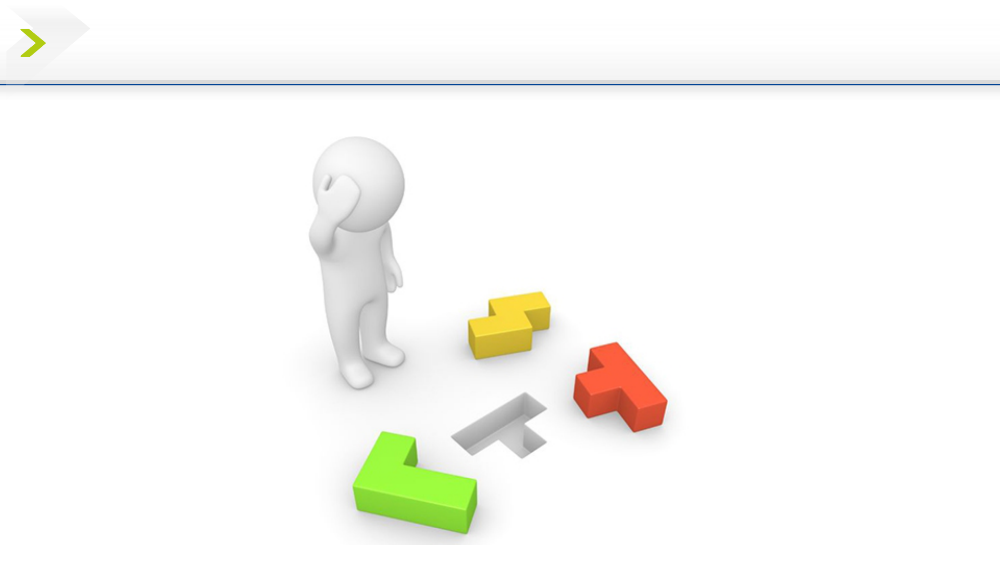
117
PerformanceTroubleshooting

118
DatabaseResourcesConsumption
CPU Memory
Disk Network
Threads–Single,Multiple
ControlI/O,Netowork
IOPSOLTP
MB/sOLAP
BufferCacheData–HitRatio
CacheSQLcodeRepeatUse
SortArea
ClientConnectionWorkArea
SupportClientConnectionNumberofConnections
ReplicationAAG,DataGuard…
InternConnect–RAC
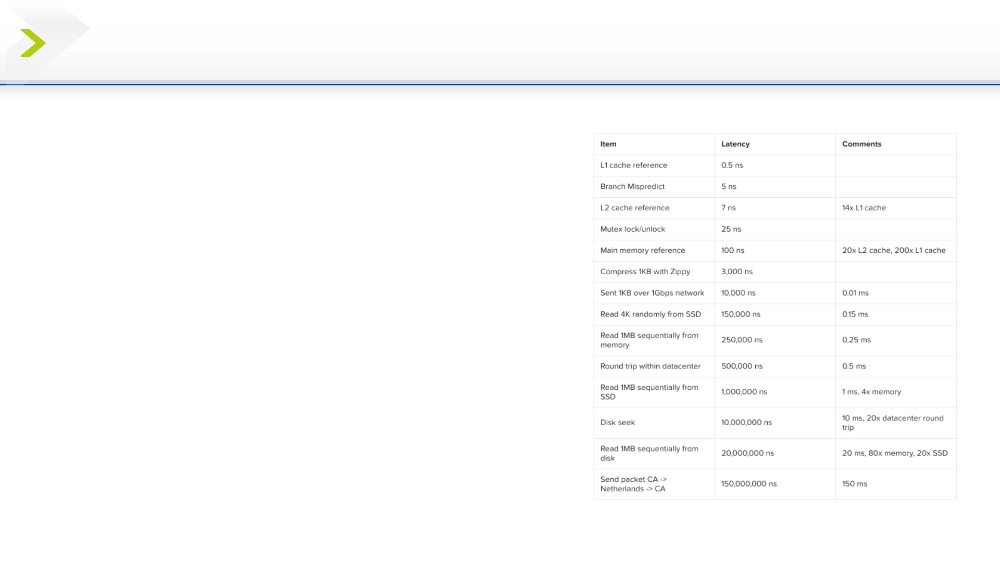
119
Slow–youcanfeel
WhenyouimproveyourCPUperformance
by100%Canyoufeelthat?No….
ButWhenyouimproveyourDiskIOperformance
by100%Youwillfeelit.
Ex:IhaveaHomePC,IupgradetheCPUmodel
orIreplaceanewSSDfromoldHDD?
Whatyouwillfeelworth?

120
DatabasePerformanceIssue(forSystemlevel)
• Findwhatyourapplicationconsume?
• CPU,Memory
• DiskIO
• Network
• Database(wewillnotcoverthislevel,that’sDBAshoulddothis!
• Datastructure(Table/Index)
• SQLstatement(Optimization,parse,executingplan)
• Databasewaits,lock,latch….
• Whencustomersaid–Myperformanceslow….What’sthefirstto
investigate?Answer:DiskIO
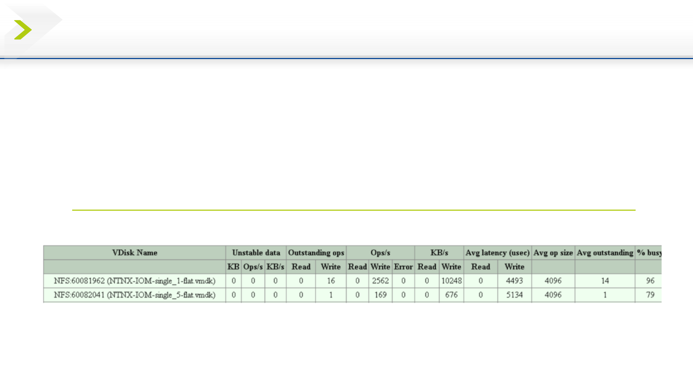
121
IdentifySingleThreadActivities
• IfSinglethread–YounevergetmoreIOPS.Howweidentifiedit’sa
singlethreadIO?
• DDisaverycommonexamplewhencustomerdoingperformancetest
• CheckNFSSlave“Avgoutstanding”
• https://portal.nutanix.com/#page/kbs/details?targetId=kA0600000008hMOCAY
OrinWindowstaskmanager,youalwayssee

122
Windowstaskmanager
SingleThreadRunningin
WindowsTaskManager

123
StargateComponentsAccess
FrontendAdapter(iSCSI/NFS)
AdmissionControl
vDiskController
ExtentStore
Oplog
ExtentCache(Nodedupe)
ContentCache(Dedupe)
StargateComponent

124
StargateComponents
• FrontendAdapter
• Receivesread/writerequestsfromthehypervisorhost
• AdmissionControl
• DetermineswhichrequeststoforwardtovDiskcontrollers,basedonthetypeofrequestand
numberofoutstandingrequestsinthepipeline
• vDiskController
• RespondstoincomingrequestsbasedonwhetheritisrandomorsequentialRandomIOissentto
theoplog.SequentialIOissenttotheextentstore.
• Oplog
• Receivesrandomwriterequests,whicharecopiedtoanoplogonanothernodeforhighavailability

125
StargateComponents
• ExtentStore
• Respondstorequestsbyreadingandwritingtothephysicaldisksonthenodeandsendsa
copytoanextentstoreonanothernodeforhighavailability
• ExtentCache(nodedupe)
• Holdsacopyofthemostrecentlyreturnedreadrequestsforcontainersconfiguredwithout
FingerprintonWrite(dedup)
Theextentcacheisstoredinmemory.
• ContentCache(dedupe)
• HoldsacopyofthemostrecentlyreturnedreadrequestsforcontainersconifiguredwithFingerprint
onWrite(dedup)
Thecontentcacheisstoredinmemoryandthemetadatadrive.

126
WhatweneedtocheckinstorageI/O?
Youneedtoinvestigatethosefirst–
• What’smydatabasesize?DomydatabasedataalwaysonSSD?
• CheckfromprismSeeifyourdatamostoftimeisinSSD
• Atleast50%ormoredatashouldbeonSSDex:youhave2TBdatabasebuyyoujustuse2x480GBSSD
nodetosupportit?
• Dowehaveenoughwritecache?
• NutanixusingOPLOGaswritecache–before4.5weusepervDisk2GBOPLOGlimitation,after4.6wehave
onevDisk6GBOPLOGlimitation.
• Checkfromprismport2009(stargatepage)seeifOPLOGfull.IfOPLOGfull,youneedaddmorevDisk
• IfaddmorevDisks,OPLOGstillfull.Youcanconsiderproposeallflashmodel.

127
WhatweneedtocheckinstorageI/O?
Youneedtoinvestigatethosefirst–
• CPUwaitIOtimeishigh?
• AlwaysCPUshouldbespendtimeforprocessapplicationnotforsystem%andwait%
• Using“Taskmanager”inWindowsor“Glances”,“Sar”..InLinuxtoidentiy
• WhereisheavyIOsource?Whoisthetroublemaker?
• SomebadSQLstatementconsumealltheIO?
• CreatesomeindextohelpreduceIOrequirement?
• ChecktheSQLexecutionplan?(MayneedDBAsupport)

128
WhatweneedtocheckinstorageI/O?
• Dowehaveenoughqueue?
• Whenmultipleconnections,oryoujusthaveonevDiskfordataaccessing,youalwaysgetthis
issue
• Alwaysyouwillseelatencyhigher
• CheckthequeuefromOSfirst,Hypervisorlevel,Storagelevel

129
StartOplogMonitoring
• TwomethodtocheckOplogusage–
• Enableport2009iniptables
- Shouldbeopennormally
- Ifnotopenport,pleaseusefollowcommendinCVM
- foriin`svmips`;dossh$i"sudoiptablestfilterAWORLDLISTptcpmtcpdport2009j
ACCEPT&&sudoiptablessave";done
- Connecttohttp://CVM:2009
• collect_perfthenuploadtoilluminatiAnalysisServer

130
Oplogmonitoring
• ChecktheOplogSize
• Before4.5oplogis2GB,afterNOS4.5oplogsizeperdiskis6GB
• Check“oplog”size,ifconsistencykeepinmaximum.Separatetomorevdisk.
• Avglatency(usec)alsoneedtocheck
• SomeGflagcantune
• stargate_prioritize_drain_on_oplog_pct_left=80(default35)
• stargate_vdisk_max_op_delay_secs=0(default5)
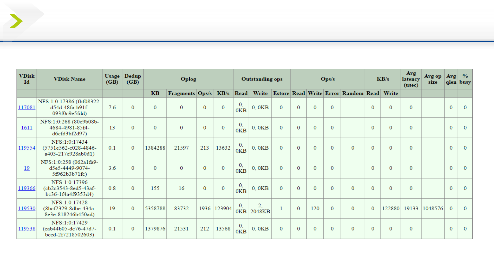
131
Oplogusagepage


133
ExtentStore
• It’sgoodplacetocheckdataisdraintoHDD
• IfmoreactivitiesarelocateintheHDD
• SSDcan’tholdthedataoverflow
• Sequentialwrite(Ops/s–Writewillmore)
• Datanotinextentcache(Ops/s–Readwillmore)

134
Sometimesyouneedcheckbackenddiskresponsetime
Slowdiskresponse
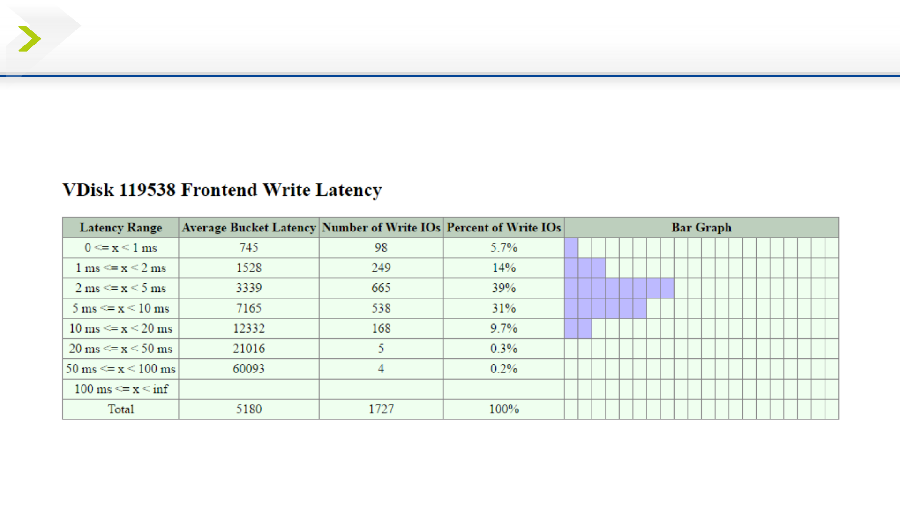
135
CheckallvDiskLatencyRange
• Ifyourresponsetimeisbetween2~20ms,justlikeatraditionalstorage
• Ifyourresponsetimeismorethan50ms,customershouldbefeltslowresponseinapp
• Weshouldbekeeptheapplicationbelow1ms,thenyourcustomerwillbeveryhappy

136
ChecktheaveragelatencyforavDisk
Mostoftime,thisshouldbenearFrontEndwritelatency
Ifyoufindthisnotmatchtofrontendwritelatency,youshouldcallsupporttocheck

137
Checkwherethedataislocate
BestCaseshouldbefromthis

138
OraclePerformance&Troubleshooting(cont’d)
qAWRReports
o Showsperformancedatacapturedbetweentwosnapshots
o Reportsaveragesstatisticsoverthetimeperiodbeinganalyzed
o Defaultsnapshotsarehourly
o Forperformancetroubleshooting,snapshotshouldbearound15minutesto30
minutesduringpeaktimeortroubletime
o Musthaveabaselinetocompareagainst
o Fortransactionaldatabase,latencyisthemostimportantfactor
o Foranalyticaldatabase,throughputisthemostimportantfactor
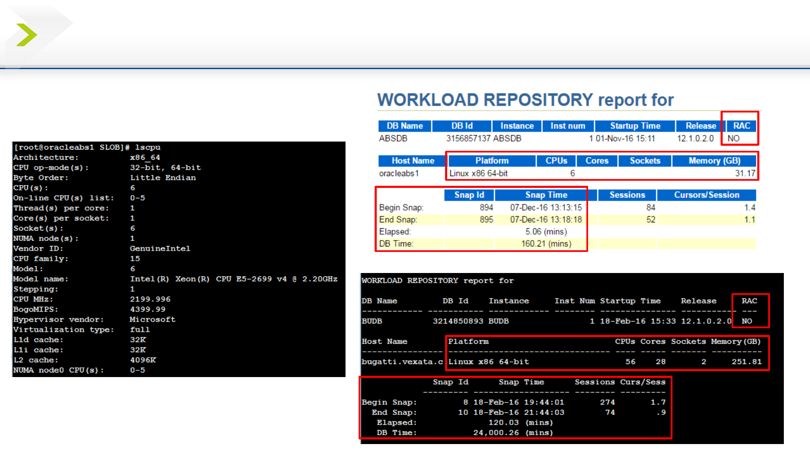
139
OraclePerformance&Troubleshooting(cont’d)
q AnalyzingAWRReports
o Thingstolookfor
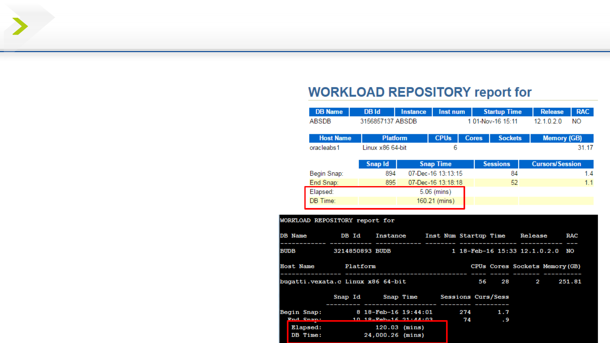
140
OraclePerformance&Troubleshooting(cont’d)
q AverageActiveSessions
o ThenumberofconcurrentsessionsthataredoingSQLor
PL/SQLstatements
o Thiswillgiveagoodindicationofhowbusythedatabase
isduringthatsnapshotperiod
o AAS=DBtime/ElapsedTime
o 160/5=32activesessions
o 24000/120=200activesessions
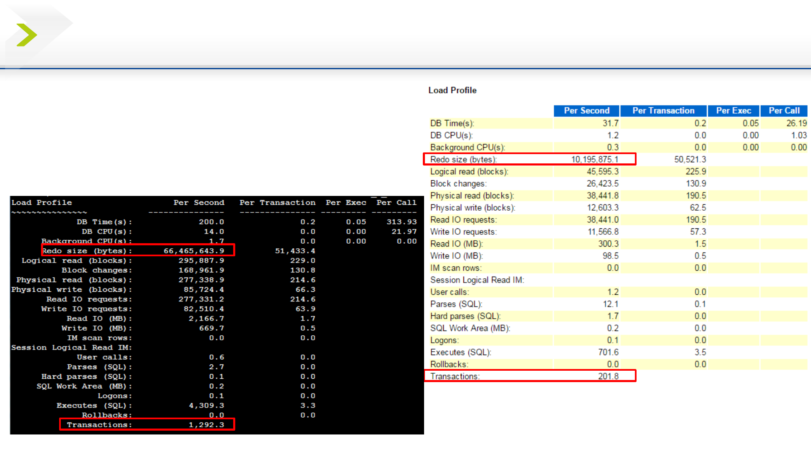
141
OraclePerformance&Troubleshooting(cont’d)
q LoadProfileSection
o Thissectiongivesanindicationoftheredosize(inbytes)
duringthesnapshotperiod.
o TheRedoSizeshowshowmuchredohasbeengenerated.
o Transactionsshowshowmanytransactionspersecond
thedatabasehasgeneratedduringthesnapshotperiod.
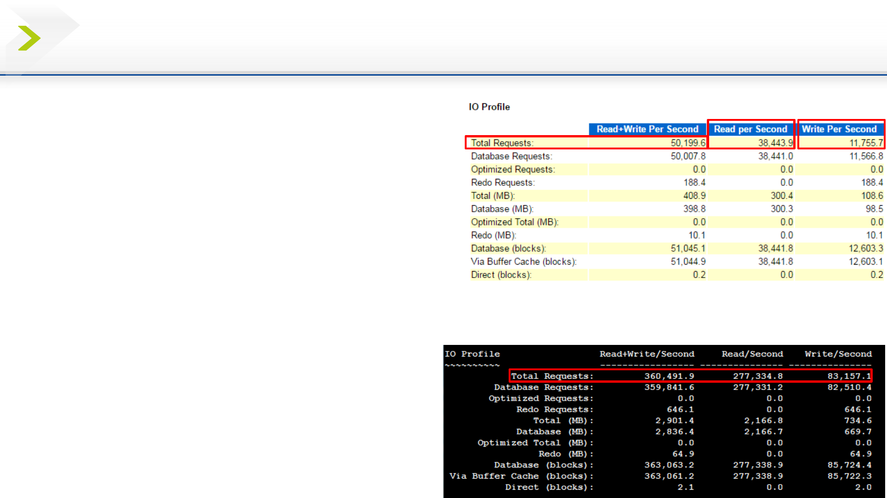
142
OraclePerformance&Troubleshooting(cont’d)
q IOProfileSection
o ThissectiongivesanindicationofthephysicalIORequest
o TotalPhysicalIOs=50199.6
o PhysicalRead%=38443.9/50199.6*100=76.6%
o PhysicalWrite%=11755.7/50199.6*100=23.4%
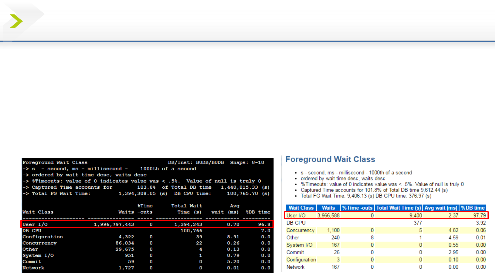
143
OraclePerformance&Troubleshooting(cont’d)
q ForegroundWaitClassSection
• Lookforthe“UserI/O”and“SystemI/O”waitclassandthe%valueinthe“%DBtime”column.Thisis
the%ofDBtimethatwasspentwaitingonI/O.Alsolookatthe“Avgwait(ms)”columnforthosewait
classes.
• UserI/OWaitWaitsforuserI/O(ex:‘dbfilesequentialread’)
• SystemI/OWait–WaitsforbackgroundprocessI/O(ex:DBWRwaitfor‘dbfileparallelwrite’)
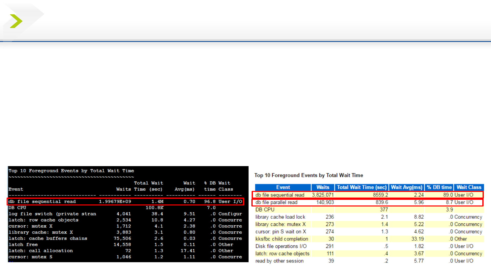
144
OraclePerformance&Troubleshooting(cont’d)
q Top10ForegroundEventsSection
• LookforEventswithhigh%DBTime
• Dbfilesequentialread–RandomI/Osingleblockreadfromdisk(89%DBtime)
• Dbfileparallelread–Happensduringrecoveryorduringbufferprefetchingasanoptimization(8.7%DBtime)
• DBCPU–Oracleserver/foreground/shadowprocessCPUconsumption(3.9%DBtime)
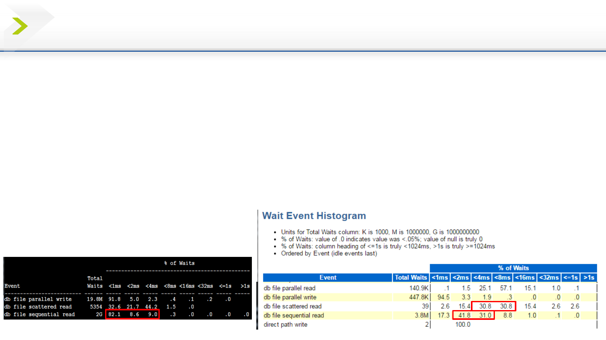
145
OraclePerformance&Troubleshooting(cont’d)
q WaitEventHistogramSection(from<1msto>1s)
• Showsapercentagetrendatdifferentlatencyvalues
• Dbfilesequentialread–RandomI/Osingleblockreadfromdisk
• Dbfilescatteredread–AmultiblockreadfromdiskintotheSGA
• Dbfileparallelread–Happensduringrecoveryorduringbufferprefetchingasanoptimization
• Dbfileparallelwrite–DBWRperformsaparallelwritetofiles
• Directpathwrite–AprocessiswritingbuffersdirectlyfromPGAtodisk
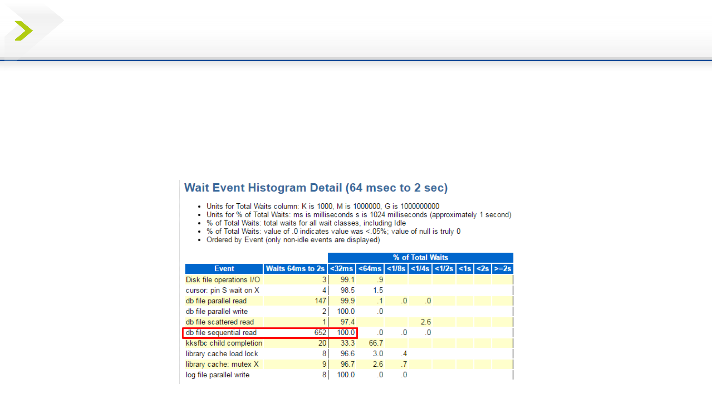
146
OraclePerformance&Troubleshooting(cont’d)
q WaitEventHistogramSection(from<32msto>=2s)

147
OracleLicense&Support

148
OracleLicenseModel
• NamedUserPlus
- StandardEditionOnerequiresaminimumof5NamedUserorthetotalnumberofactual
users,whicheverisgreater
- StandardEditionrequiresaminimumof5NamedUserorthetotalnumberofactualusers,
whicheverisgreater
- TheEnterpriseEditionrequiresaminimumof25NamedUserPlusperProcessorlicensesor
thetotalnumberofactualusers,whicheverisgreater
• Processor–Wewillintroductioninfollowingslide
• OraclelicenseswithHardandSoftpartitioningofphysicalsystems
- Hard=“fixed”–allowssubsystemlicensing(Oracle)
- Soft=“fluid”–requiresfullsystemlicensing(Virtualization)
- OraclecountsVMwareasasoft partition technology
- Mustlicense“entireserver”

149
Hard&Softpartition
Hardpartition(UsuallyonHPUX/AIX/Solaris/OracleVM) Softpartition(UsuallyonVMware,HyperV,*OracleVM)
Youjustneedtopayfor4coreslicense
Onenodewith8cores Onenodewith8cores
Youjustneedtopayfor8coreslicense
VM
Using
4vCPU
VM
Using
4vCPU

151
OracleDatabaseLicensing–
CPUBasedSKUConsiderations
StandardEditionTwo
Licensedbysocket
Limitedtotwo sockets
Mustlicensefullmachine
StandardEdition
Licensedbysocket
Limitedtofour sockets
Mustlicensefullmachine(s)
EnterpriseEdition
Licensedbycore
Applyx86factorof0.5tocores
Mustlicensefullmachine
Ex:3360G4,E52630v3(16core)
5.8Kx2socketx3
hosts=34.8K
17.5Kx2socketx3
hosts=105K
47.5Kx16corex3
hostsx0.5corefactor
=1140K
Oraclehave“NumberofUserlicense“wedonotintroducehere,onecorelicenseabout25nameusers
http://www.oracle.com/us/corporate/pricing/technologypricelist070617.pdf(OraclePriceBook)
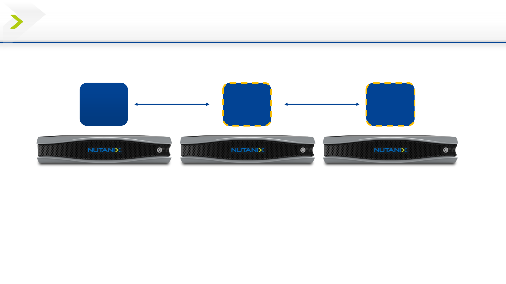
152
OracleLicenseonVirtualization
VM
(Oracle)
VM
(Oracle)
VM
(Oracle)
vMotion vMotion
• Oracletreatvirtualizationassoftpartition,weneedentitleallthelicenseofphysicalbox
• VMcanvMotionbetweenourNutanixCluster,soweneedentitleallthecluster
• UsingDRSaffinitytolimitVMvMotionhosts,thatcansaveforOraclelicense
Thoselogs(/var/log/vmware/hostd.log,/vmfs/volumes/datastore/vm/vmware.log)providevMotionandprove
VMrunningonwhichhosts
• Whenentitleallboxorcluster,youcanrunasmuchVM(Oracle)asyoucan

153
Choosethefewercoresforsavinglicense
• ChoosefewercoresmodelCPUwhenpurchase
• CheckifeveryOracleDBneeduseEEedition?DoespossibletoswitchtoSTDEdition?

154
SavingOracleLicense(DRS)
• Ifyouhave8nodesNutanixcluster,6nodeswerunVDIsolutionandwejusthavetwonodesthatrunning
OracledatabaseguestVM.Wejustneedpayfortwonodeslicensefee.
• Inthistwonodes,youcanrununlimitedOracledatabaseguestVM
VM
(Oracle)
VM
(Oracle)
VM
(Oracle)
VM
(Oracle)
VM
(Oracle)
VM
(Oracle)
Oracleusednodes
VDInodes
NutanixCluster

155
SavingOracleLicense(DifferentESXiClusterbutsame
NutanixNDFS)
ESXiCluster1(forApplications) ESXiCluster2(Oracle)
AHVwillsuggestusedifferentclusterbydatabase

156
SavingOracleLicenseDesign
NX8235G4or
NX3260G4
NX6235C
Oneclustercomposebyfournodes
TwoareComputeNodes,theothertwoareStorageNodes
SowejustpayforthetwoComputeNodeslicenses,because
OracleGuestVMneverrunningonStorageNodes.
VM
(Oracle)
VM
(Oracle)
VM
(Oracle)
VM
(Oracle)
VM
(Oracle)
VM
(Oracle)
VM
(Oracle)
VM
(Oracle)
VM
(Oracle)

157
Maintainsamelicensecostasbefore
Volume Group
Non-disruptive upgrades &
fast fail-over in seconds
I/O load balanced across all nodes
(including new node)
Single-step discovery via data
services IP
New Node
Nutanixjustasastorage
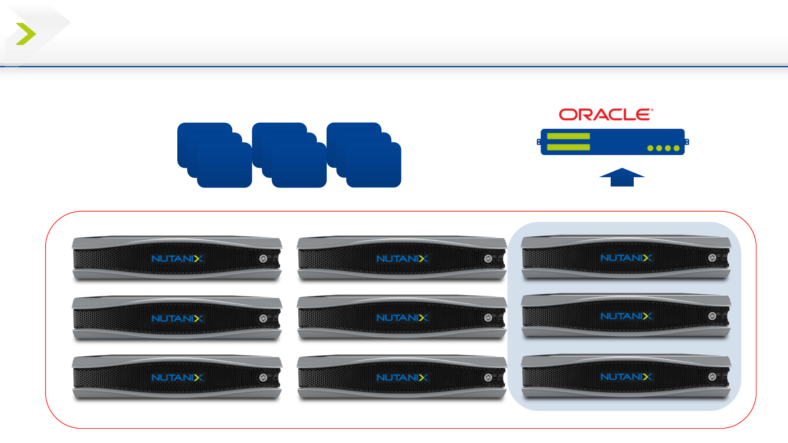
158
Youcandesignlikethis
VM
(Oracle)
VM
(Oracle)
VM
(APP)
VM
(Oracle)
VM
(Oracle)
VM
(APP)
VM
(Oracle)
VM
(Oracle)
VM
(APP)
DedicateforABS
iSCSI
NFS
159
OracleLicensing

160
MarsvsOracle
http://houseofbrick.com/marsvsoracle/
TheMartian’sresponse
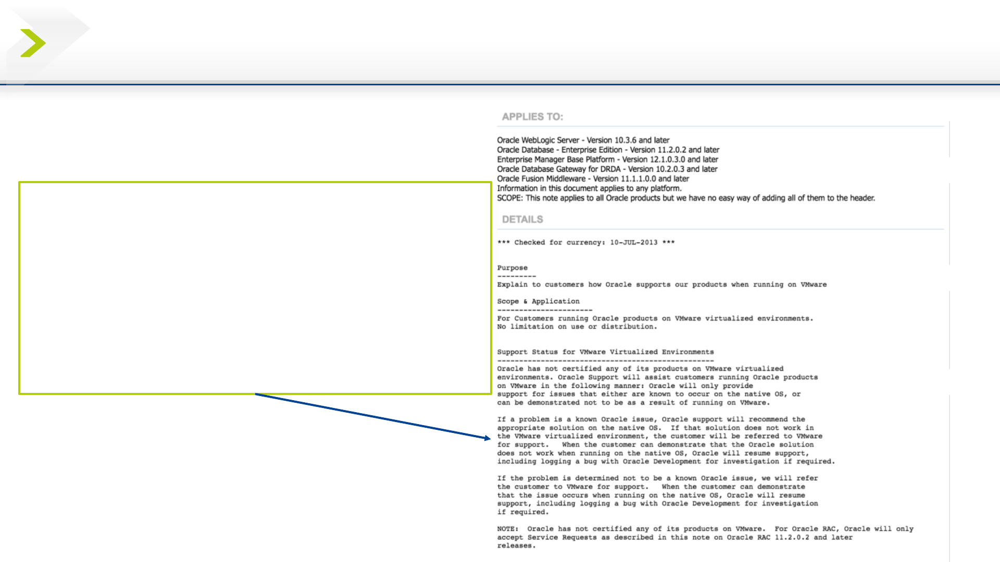
161
Oracle support ESXi Document – 249212.1
IfaproblemisaknownOracleissue,Oraclesupport
willrecommendtheappropriatesoutiononthenativeOS.
IfthatsolutiondoesnotworkintheVMwarevirtualized
Environment,thecustomerwillbereferredtoVMware
Forsupport.Whenthecustomercandemonstratethatthe
Oraclesolutiondoesnotworkwhenrunningonthe
nativeOS,Oraclewillresumesupport,includinglogginga
BugwithOracleDevelopmentforinvestigationifrequired.


Thank You
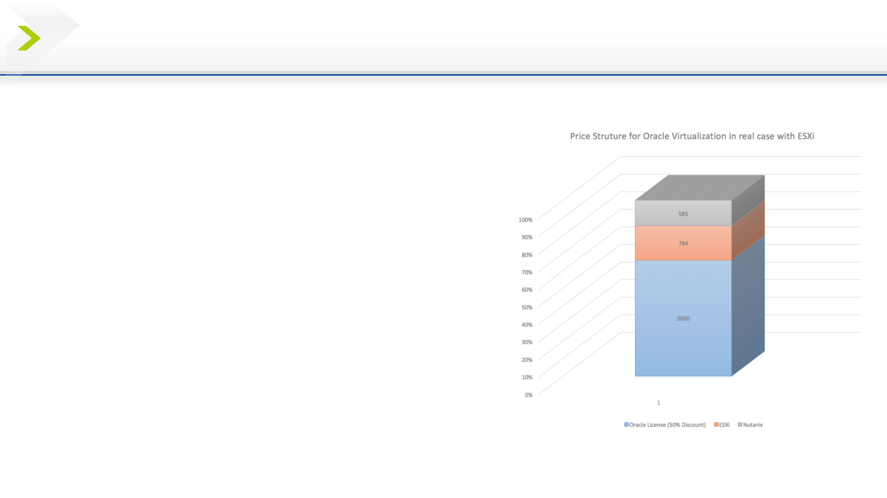
165
WhereshouldIgetdiscount?
• Thisisarealcase–
• Oraclealreadyassume50%discount
• WecanseeOracletake60%
ofallprojectbudget
• VMwareget23%ofwholeproject
• Nutanixjust17%inwholeproject
• IfwegetmorediscountfromOracle
Wecansave$$
• WealsocaneliminateESXilicence
FeebyusingAHV

166
Ifmydatabasedatamorethanonenode?
First–Ihavetosay,youdidthewrongsizing
Nutanixstillcanfixthisissue
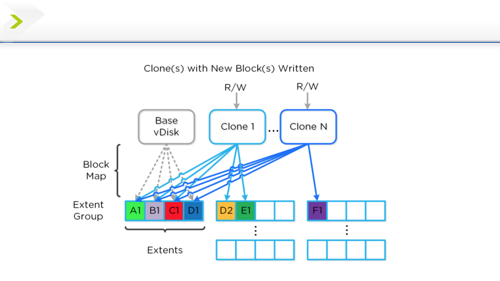
167
NutanixClone

168
NutanixSnapshot
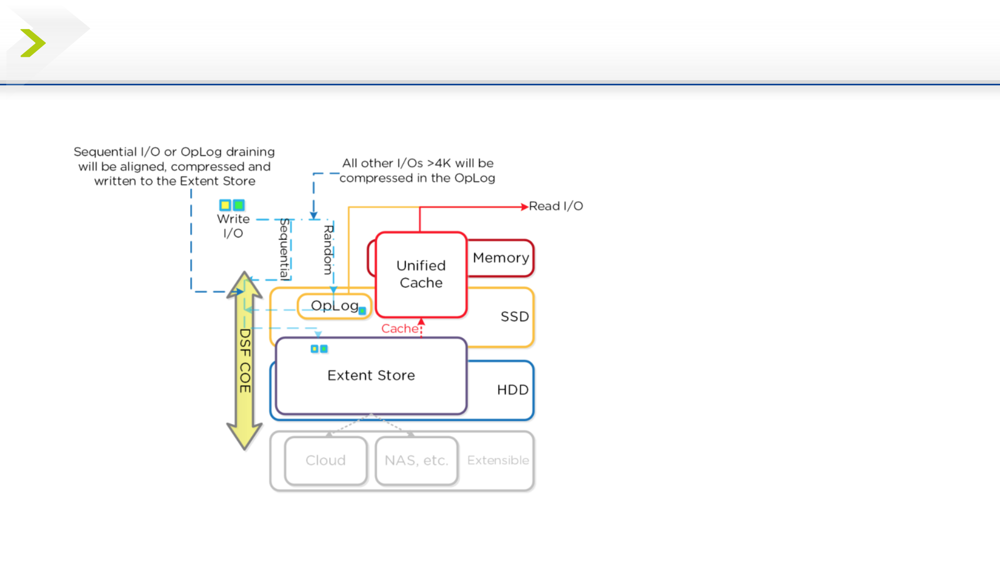
169
CompressioninContainerLevel
Thiswillalsoincreasetheusable
sizeoftheSSDtierincreasing
effectiveperformanceand
allowingmoredatatosit
intheSSDtier.

170
NutanixDataProtection
• Advantage
• Simple
• CansetupmultipleOracleserversbackupinonegroup,donotneedextra
configuration
• CanputallDB,RelatedAppServerinsameprotectiondomain
• CanintegratedwithVSSifguestOSisWindows
• Disadvantage
• JustrecovertoPIT
• Every60minutesinterval–RPOtoolongforadatabase